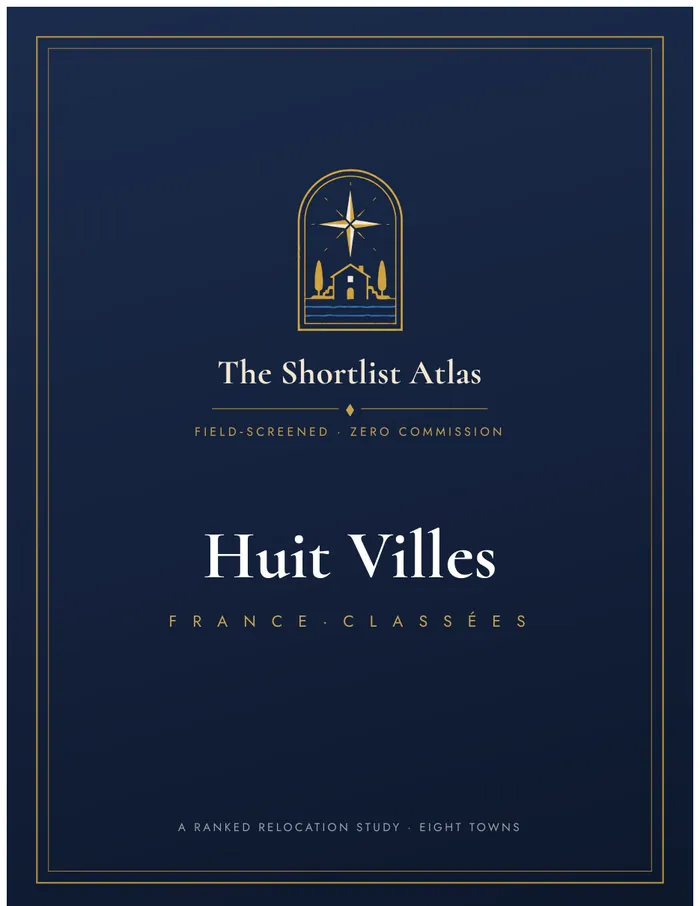
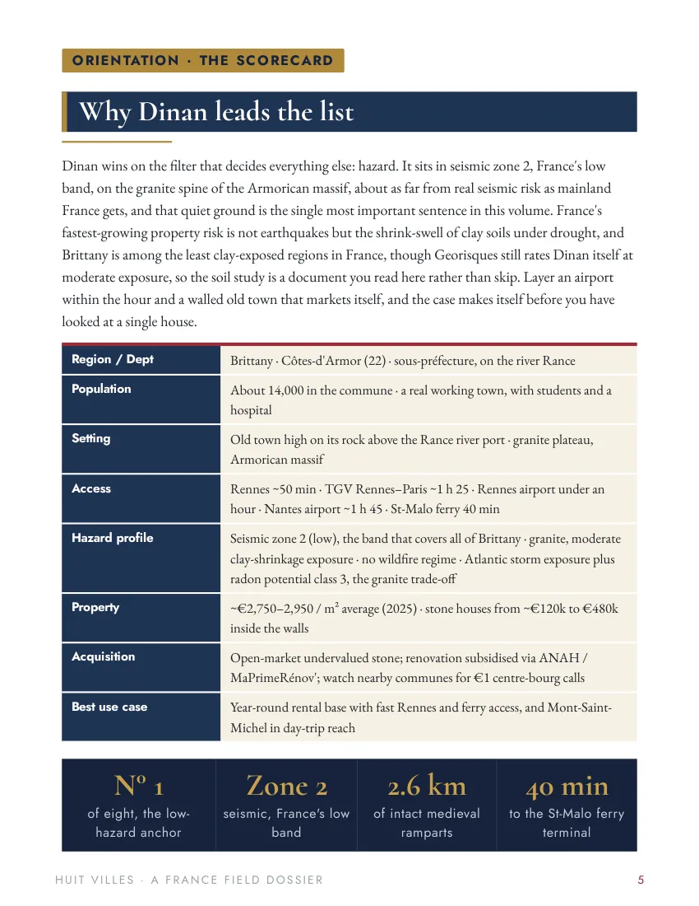
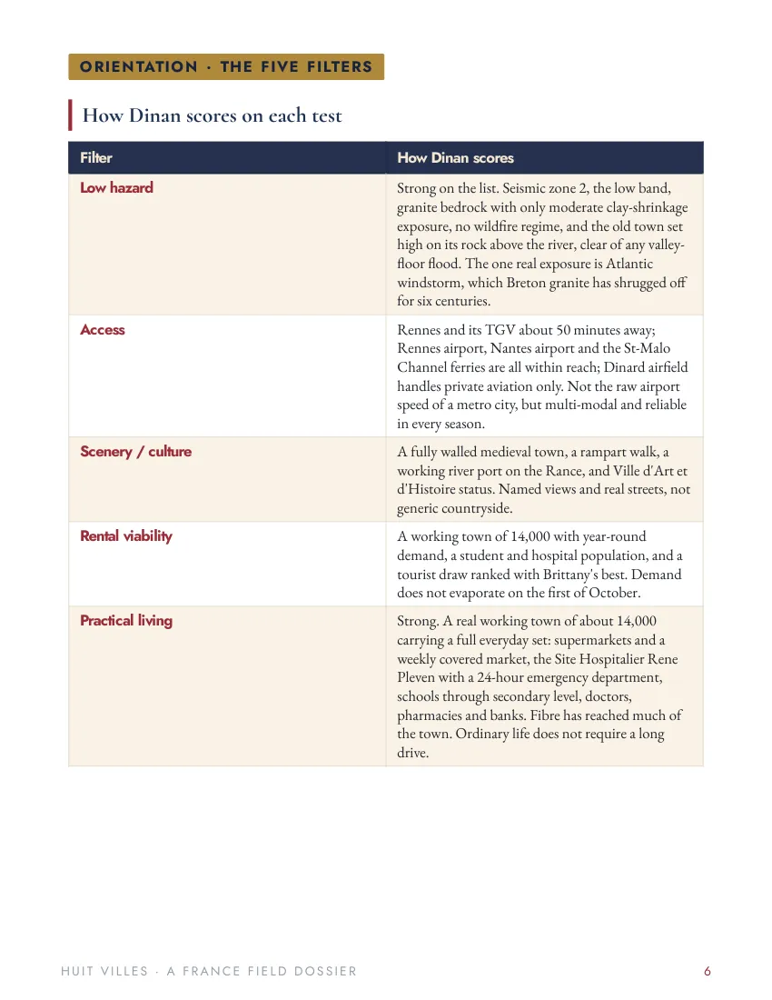

France: Eight Towns, in Order
A Field Study of Eight French Towns for the Second-Home and Full-Time Buyer.
Every Town, the Same Five Questions
Dinan
A complete medieval walled town, 2.6 km of intact ramparts and a half-timbered old quarter above a working river port, an hour from Rennes airport and the TGV to Paris, with Nantes and its long-haul links about two hours south
Bayeux
A perfectly preserved medieval and Norman town, a Gothic cathedral and the thousand-year-old Tapestry, closed until its new museum opens in autumn 2027, set just inland from the D-Day coast, twenty minutes from Caen
Vannes
A walled medieval city on one of the world's most beautiful bays, a timbered old town behind ramparts, a working small city of nearly 56,000, and a TGV to Paris in about 2 h 30
Lyons-la-Forêt
One of the officially most beautiful villages in France: pink-brick and half-timbered houses around a 17th-century covered market, ringed by a 10,700-hectare royal forest, an hour and a half from Paris
La Rochelle
One of France's most liveable cities: a historic Atlantic port behind three medieval towers, arcaded old streets, a huge aquarium and marina, the Île de Ré on its doorstep, and a TGV to Paris
Uzès
An exquisitely preserved medieval and Renaissance town, the "premier duché de France", arcaded squares, a ducal château still lived in, a unique round Romanesque tower, all in the warm Provence-adjacent south
Sarlat-la-Canéda
One of the most complete medieval and Renaissance towns in France, the honey-stone capital of the Périgord Noir, a gastronomic capital of foie gras, truffles and walnuts, with a legendary market and a valley of castles around it
Annecy
Arguably the most beautiful town in France: a canal-threaded old city, the "Venice of the Alps", on a turquoise Alpine lake ringed by mountains, prosperous, sophisticated, and about 45 minutes from Geneva in normal traffic
Huit Villes
A Field Study of Eight French Towns for the Second-Home and Full-Time Buyer. Eight towns, ranked from the low-lying granite anchors of the north to the in-demand jewels and cautionary picks of the south, each weighed across five filters, hazard, access, scenery, rental viability and practical living, and each given an honest account of what it costs to buy, to hold, and to let. The dossier closes with a full residency and tax section for the buyer who means not just to own a house in France, but to live there.

Inside the France field study ↗

210 Pages the Profiles Leave Out
- The place, its history and daily life
- The honest hazard read and the parcel checklist
- The cost of buying, holding and renovating
- Rental law, residency and tax